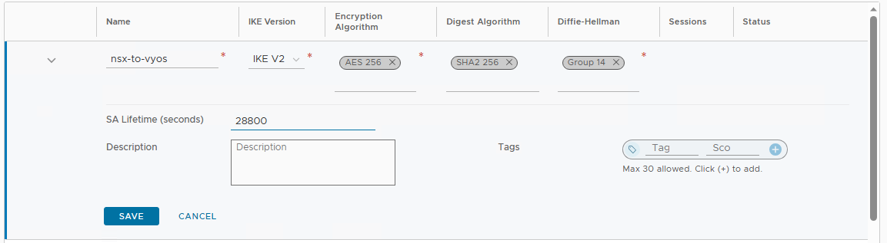

迁移 NSX-V 到 NSX-T: Lift & Shift - 1 部署目标环境
本系列将介绍如何使用 Lift & Shift + Edge 桥接的方式来迁移现存的 NSX-V 环境到 NSX-T. 第一部分将先创建新的 NSX-T 环境. 和前面类似, 此迁移将保证所有的外部地址/DNS条目/VPN peer 配置保持不变.
迁移步骤概要
在同一个 vCenter 下创建一个新的 vDC, 配置好基础的主机/存储/网络. 然后在这个新的 vDC 下创建和 NSX-V 功能等价的 NSX-T 拓扑. 为了避免对外部环境和现有环境的影响, 部分配置需要细微调整:
- 连接到物理环境的 VLAN backed segment 可暂时使用错误的 VLAN id (0) 来实现和物理环境的隔离
- 所有 NSX-T overlay segment 配置网关, 但是不连接到任何 gateway. 因为桥接之后网关在 NSX-V 那端
- 内部负载均衡器暂时不连接到 gateway
这里有些做法和 NSX migration guide 并不完全一致. 实际上现实环境各种各样, 文档无法面面俱到. 理解自己的环境, 选择最合适的方案.
对于桥接, 需要在 NSX-V 所在主机上单独部署 NSX-T Edge. 此时该主机将进行 vxlan 封装/解封装, 其上运行的 Edge 能再进行 geneve 封装/解封装, 以完成两个环境的对接. 每一个逻辑网段的桥接需要一个单独的 NSX-T Edge 集群.
配置完桥接以后就可以使用 enhanced vMotion 将工作负载从原先的 vDC 迁移到新的 vDC 并使用 NSX-T 的逻辑网段. 这个过程网络流量不会受到影响. 迁移完后将前面临时调整的部分进行修正:
- 修正 NSX-T 连接到物理世界 VLAN segment 的 VLAN id
- 将 NSX-T overlay segment 连接到 gateway
- 将内部负载均衡器连接到 gateway
创建 NSX-T 拓扑
准备传输节点和承载东西向流量的 Edge 集群
常规步骤添加 compute manager, 创建 transport node TEP pool, edge node TEP pool, transport node uplink profile, edge node uplink profile, overlay transport zone, vlan transport zone. 然后部署并配置用于东西向流量的 Edge 集群, 创建 transport node profile 完成主机准备. 不再赘述.
创建并配置 Tier-0/Tier-1
先创建连接到物理环境的 VLAN-backed segment, 暂时使用 VLAN id 0 来隔离 NSX-T 和外部物理环境
创建 Tier-0: corp-t0-gw
配置 Tier-0 的外部接口
配置 Tier-0 的 HA VIP
配置 Tier-0 的默认路由
之后 route-based IPSec VPN 所使用的 bgp 配置也可以提前做出来:

更新源地址暂时不可用, 可以先空着. Tier-0 上的 gateway 防火墙和 NAT 规则也可以先创建出来:
然后创建 overlay segments, 设置网关地址, 但是不连接到任何 Tier-0/Tier-1 gateway:
创建 Tier-1: corp-t1-ext 连接到 corp-t0-gw, 路由发布 connected subnets + LB VIP:
创建 Tier-1: corp-t1-standalone 不连接到任何 Tier-0:
在 corp-t1-standalone 上创建 service interface 连接到 Seg-B, 并设置默认路由:
这里注意一下, 因为 NSX-V 的 Seg-B 和 NSX-T 的 Seg-B 后面会桥接起来, 这个 service interface 地址不要和现有环境中的地址冲突了. 后面切换完成后, 如果想改成之前使用的地址也是可以的.
创建并配置负载均衡器
创建外部负载均衡器, 连接到 corp-t1-ext:
创建内部负载均衡器, 不连接到任何 Tier-1:
然后参照现有的环境创建 virtual servers, monitors, server pools, application profiles, application rules 等, 不再赘述
这里内部负载均衡器上的 virtual servers 可以直接使用原始地址. 因为内部负载均衡器没有附加到 corp-t1-standalone, 后面即使做了桥接也不会有地址冲突的问题. 外部负载均衡器上的 virtual servers 也可以直接使用原始地址, 这是因为 Seg-C 还没有连接到 corp-t1-ext, 因此即使 Seg-C 做了桥接也不会有地址冲突.
创建并配置 IPSec VPN
参照现有的 VPN 配置, 对应地在 Tier-0 上创建 IPSec VPN service:
创建 VPN endpoint, 使用和 NSX-V 一致的地址来保证 VPN peer 配置不变:
创建和 NSX-V 环境一致的 IKE profile + IPSec profile

最后创建 VPN 会话, 选择前面自定义的 IKE profile + IPSec profile. 由于目前是隔离状态, VPN 会话是 down 的状态